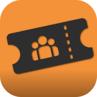

PronohubPolitique de confidentialité
Mise à jour le 16 novembre 2026
En bref. Pronohub est un jeu de paris entre amis avec des jetons fictifs. Aucun argent réel, aucune publicité, aucun traceur. On garde le minimum pour faire fonctionner tes cercles, et tu peux tout supprimer quand tu veux.
Qui est responsable
Pronohub est développée par un particulier, en Belgique. Pour toute question sur tes données, utilise le formulaire de contact de l'app ou l'adresse de contact indiquée sur la fiche Play Store.
Les données enregistrées
| Donnée | Pourquoi |
|---|---|
| Pseudo et avatar | Te montrer aux membres de tes cercles et à tes amis. |
| Cercles, paris, mises, commentaires, réactions | Le jeu lui-même. Visibles des membres du cercle uniquement. |
| Nom d'utilisateur (facultatif) | Permettre à tes amis de te trouver. Qui connaît ce nom exact voit ton pseudo et ton avatar. Sans nom d'utilisateur, tu n'es pas trouvable. |
| Liste d'amis et liens d'invitation | Les face-à-face et les invitations. Une fiche d'ami n'est visible que des deux amis. |
| Adresse e-mail (si tu crées un compte e-mail ou Google) | Te connecter sur plusieurs appareils. Jamais montrée aux autres joueurs. |
| Identifiant de compte technique | Relier tes données à toi, même sans compte e-mail (identité anonyme). |
| Jeton de notification de l'appareil | T'envoyer les notifications que tu as activées. Lisible par toi seul. |
| Signalements et joueurs bloqués | Traiter les abus. Un signalement transmet au développeur le contenu signalé, son auteur et ton identifiant. Ta liste de joueurs bloqués n'est visible que de toi. |
| Messages envoyés par le formulaire de retour | Lire et répondre à tes remarques. L'e-mail y est facultatif. |
Sans compte en ligne, tout reste dans ton appareil. Pronohub ne collecte ni ta position, ni tes contacts, ni tes photos, ni de données de paiement.
Les services utilisés
- Google Firebase : comptes, base de données et envoi des notifications.
- Cloudflare : un petit relais qui décide qui prévenir lors d'un nouveau pari. Il ne conserve rien.
- ESPN : calendriers et résultats sportifs, chargés directement par ton appareil.
- GitHub Pages et Google Fonts : hébergement de l'app et de sa police de caractères.
Ces services reçoivent l'adresse IP de ton appareil pour fonctionner. Aucune donnée n'est vendue ni partagée à des fins publicitaires.
Combien de temps
Tes données restent tant que ton compte existe. Quand tu le supprimes, ton profil, ton nom d'utilisateur, ta liste d'amis, tes liens d'invitation et tes jetons de notification sont effacés. Tes mises passées restent dans l'historique des cercles sous le nom « Ancien membre ». Les cercles que tu as créés restent en place tant que tu ne les supprimes pas (Gérer ce cercle, puis Supprimer). Voir comment supprimer ton compte.
Tes droits
Tu peux consulter, exporter (Réglages, puis Exporter mes données), corriger et supprimer tes données à tout moment. Tu peux aussi introduire une plainte auprès de l'Autorité de protection des données.
Âge minimum
Pronohub contient des paris simulés et est réservée aux personnes de 18 ans et plus.
Privacy policy
Updated 16 November 2026
In short. Pronohub is a betting game between friends that uses play tokens. No real money, no ads, no trackers. We keep the minimum needed to run your circles, and you can delete everything whenever you like.
Who is responsible
Pronohub is developed by an individual based in Belgium. For any question about your data, use the contact form in the app or the contact address shown on the Play Store listing.
Data we store
| Data | Why |
|---|---|
| Nickname and avatar | To show you to members of your circles and to your friends. |
| Circles, bets, stakes, comments, reactions | The game itself. Visible to circle members only. |
| Username (optional) | To let your friends find you. Anyone who knows the exact name sees your nickname and avatar. Without a username, you can't be found. |
| Friends list and invite links | Head-to-heads and invitations. A friendship record is visible to the two friends only. |
| Email address (if you create an email or Google account) | To sign in on several devices. Never shown to other players. |
| Technical account ID | To link your data to you, even without an email account (anonymous identity). |
| Device notification token | To send the notifications you turned on. Readable by you only. |
| Reports and blocked players | To handle abuse. A report sends the developer the reported content, its author and your ID. Your list of blocked players is visible to you only. |
| Messages sent through the feedback form | To read and answer your feedback. Email is optional there. |
Without an online account, everything stays on your device. Pronohub does not collect your location, contacts, photos or payment data.
Services we use
- Google Firebase: accounts, database and notification delivery.
- Cloudflare: a small relay that decides who to notify about a new bet. It stores nothing.
- ESPN: sports fixtures and results, loaded directly by your device.
- GitHub Pages and Google Fonts: hosting for the app and its typeface.
These services receive your device's IP address in order to work. No data is sold or shared for advertising.
How long
Your data stays as long as your account exists. When you delete it, your profile, username, friends list, invite links and notification tokens are erased. Your past stakes stay in circle history under the name "Former member". Circles you created stay until you delete them (Manage this circle, then Delete). See how to delete your account.
Your rights
You can view, export (Settings, then Export my data), correct and delete your data at any time. You can also lodge a complaint with your data protection authority.
Minimum age
Pronohub contains simulated betting and is intended for people aged 18 and over.